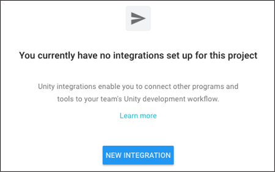
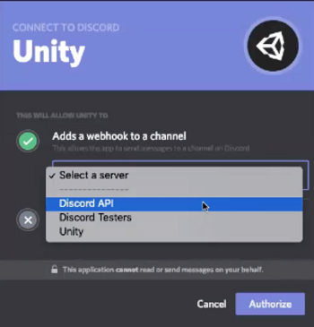

Unity Integrations 允许在开发工作流程中将以下 Unity 服务连接到非 Unity 工具：
要添加集成，您必须是项目的所有者 (Owner) 或管理员 (Manager)。如需了解有关分配角色的信息，请参阅管理您的组织的“成员和组”部分。
Unity Integrations 支持以下非 Unity 工具：
Unity Personal 将用户限制为对于所有事件只能使用一个集成，但多个 Unity 服务都可以使用该集成。Unity Teams、Plus 和 Pro 用户最多可拥有 100 个集成。如果您的 Unity Teams、Pro 或 Plus 订阅到期，Unity 将保留您当前的所有集成，但会自动禁用它们。如果发生这种情况，您仍然可以登录 Unity Services Dashboard 并启用单个集成。
要为工作流程添加集成，请执行以下操作：
1.登录 Unity Services Dashboard。
2.选择要添加集成的项目。
3.在左侧导航栏中，选择 Settings > Integrations。
4.随后将显示集成控制面板。单击 NEW INTEGRATION 按钮。

5.选择要启用的集成。
6.选择要触发集成的事件，然后单击 NEXT 按钮。
7.配置集成选项。这些选项因所选的集成而异，并将在以下部分中详细介绍。
要配置 Webhook 集成，请提供以下信息：
| 参数 | 描述 |
|---|---|
| Display Name | 用于标识集成列表中的集成的名称。 |
| Webhook URL | 从 Unity 服务接收 Webhook POST 请求的服务器端点的 URL。 |
| Authentication Secret | 接收端应用程序的客户端密钥。 |
| Content Type | 内容的 MIME 类型。从下拉菜单中选择数据的内容类型。 |
| Disable SSL/TLS Verification | 勾选此复选框可禁用 SSL/TLS 安全证书的验证。 验证 SSL/TLS 证书有助于确保数据安全发送到上方的 Webhook URL。建议不要启用此选项，因此只有在您完全清除自己目的的情况下才启用此选项。 |
为了配置 Discord 集成，Unity 会调用一个应用程序以使用 Discord API 将 Webhook 注册到 Discord 通道。如果您没有 Discord 服务器，请参阅 Discord 文档中的如何创建服务器？(How do I create a server?)。
重要信息：必须在要集成的帐户上启用 Webhooks。
要完成配置，请执行以下操作：
1.创建新的 Discord 集成并选择其事件。
2.单击 NEXT 按钮。在 Discord 登录屏幕上进行登录。
3.随后将显示 CONNECT TO DISCORD 对话框屏幕。

4.从 Select a server 下拉菜单中选择您的 Discord 服务器。
5.从 Select a channel 菜单选择要将通知发布到的通道。
6.单击 Authorize 按钮。
为了配置 Slack 集成，Unity 会调用一个应用程序以使用 Slack API 将 Webhook 注册到 Slack 通道。
创建新的 Slack 集成并配置要显示的事件后，必须授权 Unity 访问 Slack 服务器。
如果您没有 Slack 服务器，请参阅 Slack 文档中的创建 Slack 工作空间 (Create a Slack workspace)。
要完成配置，请执行以下操作：
1.登录 Slack 帐户。 2.在应用程序的右上角，选择 Slack 工作空间。 3.从 Post to 下拉菜单中，选择要将通知发布到的 Slack 通道。 4.单击 Authorize 按钮。
当项目发生指定事件时，Email 集成会通知团队成员。
1.从控制面板创建 Email 集成以查看事件菜单。
2.选择要接收电子邮件通知的事件，然后单击 NEXT 按钮。
注意：Cloud Build 单独处理电子邮件通知设置。可以通过单击事件菜单底部的 here 链接来配置这些设置。
3.选择您希望接收到通知的团队成员。
4.如果您希望将来添加的团队成员自动接收其他团队成员收到的电子邮件，请选择 Send email to new team members。
Unity JIRA 集成允许您以如下方式与 JIRA 交互：
要为 Collaborate 或 Cloud Diagnostics 配置 JIRA 集成，必须提供以下信息：
| 参数 | 描述 |
|---|---|
| Display Name | 用于标识集成列表中的集成的名称。 |
| JIRA Site URL | JIRA 实例的 URL。 |
| JIRA Username | 有权将更新发布到 JIRA 实例的帐户的用户 ID。 |
| JIRA REST API Token | 用于验证向 JIRA 服务器发送的集成请求的 API 令牌。有关如何创建令牌的说明，请参阅 Atlassian 的文档。 |
输入 JIRA 实例的信息后，必须为 Cloud Diagnostics 提供以下附加信息：
| 参数 | 描述 |
|---|---|
| Create Issues In This Project | 选择要在其中创建问题的项目。 |
| Mark Incoming Issues As | 选择要将报告记录为的问题类型。 |
在 Collaborate 中进行更改时，通过在提交消息中引用问题标识来更新与 JIRA 相关的问题。例如，通过“I fixed the crashes caused by ISS–42”向问题“ISS–42”添加发布详情。
The Unity Trello Integration has the following features:
https://trello.com/c/lhLmnCRZhttps://trello.com/c/lhLmnCRZ/1-the-card-titleTo configure a Trello Integration for Collaborate or Cloud Diagnostics:
要管理现有集成，请执行以下操作：
1.登录 Unity Services Dashboard。 2.选择包含要编辑的集成的项目。 3.在左侧导航栏中，选择 Settings > Integrations。
要编辑或删除现有集成，请单击要修改的集成旁边的 EDIT。可进行的编辑类型取决于具体集成：
要启用或禁用现有集成，请单击 Status 切换开关来启用或禁用集成。